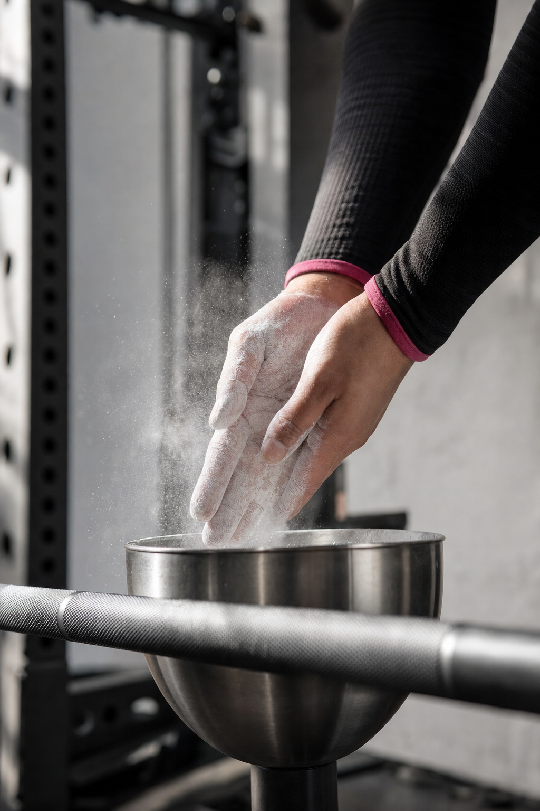
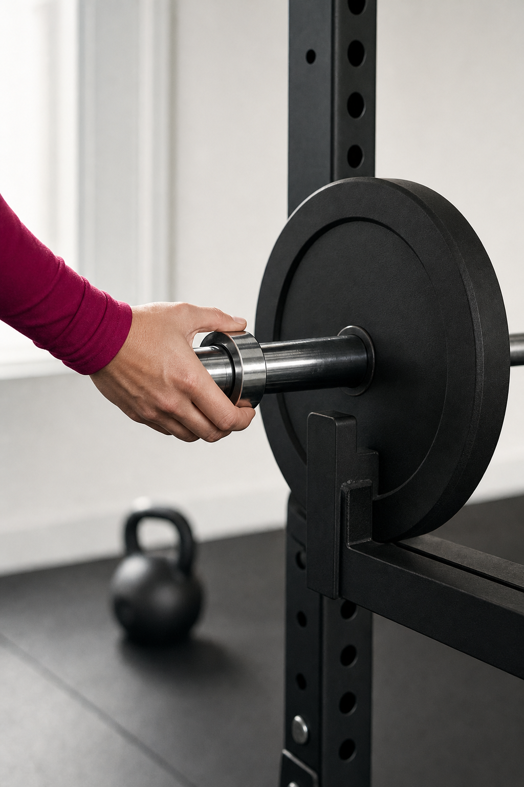

01The read
A second studio.Hands only.
Misty, Nelson Taylor here. I'm a creative director and shooter based in Dallas–Fort Worth, and Community Impact's piece on your second studio in Keller led me to your site and your feed.
Your site lays out the format — 1-1 personal training and semi-private sessions — and your Instagram already runs on reels.
So this concept begins with the privacy. The lens stays on what the room is made of: the knurl on a bar, chalk worked into a pair of hands, a collar clipped on, a kettlebell set down, the studio quiet before the day starts. No faces, and no one filmed without a yes first.
What you'd come away with is footage of the new room for your reels to draw on through a quarter, and nobody ever has to stand in front of a camera for it.

Set 2 · the chalk
02The idea
The setup,every week.
A single recurring opener holds the quarter together. Every week starts on one locked-off frame inside the new studio: a loaded bar resting on the floor, early light across it. Then hands enter. Chalk, grip, a collar, one detail of a lift being set up.
Over that runs a single line in your words, a coaching cue or a thought for the week, as on-screen text or a voice-over, whichever you like. The line is always yours to write.
The frame stays; the detail changes. Your feed gets a beat it can count on, the Keller studio gets a regular place in it, and being on camera stays optional for everyone.

Set 4 · the collar
03What we'd shoot
One day,six sets.
One day in the Keller studio, at an hour you choose. A stretch with no sessions on the floor keeps the room to ourselves and everyone's privacy intact. Hands, steel, light and space.
-
Set 1 · first light
Creative direction — treatment frames, not final footage. First light
The empty studio as the windows warm up: racks squared, bars resting, the floor clear.
-
Set 2 · the chalk
Creative direction — treatment frames, not final footage. The chalk
Chalk pressed into a pair of hands in long sleeves, slow and close. Macro stills on the A7RV.
-
Set 3 · the knurl
Creative direction — treatment frames, not final footage. The knurl
The grip of the bar up close: the diamond pattern, a palm settling onto it, a little chalk in the light.
-
Set 4 · the collar
Creative direction — treatment frames, not final footage. The collar
A plate slid on, a collar clipped home. A sharp, clean sound to cut on.
-
Set 5 · the kettlebell
Creative direction — treatment frames, not final footage. The kettlebell
A kettlebell set down on the floor, the hand leaving the handle. One quiet beat for the edit.
-
Set 6 · the rack
Creative direction — treatment frames, not final footage. The rack
The rack row, wide and still, after the last session of the day. A natural closing shot.
Between video setups, the A7RV makes a bank of stills in the same light: material for the grid, your site, and any page that needs a photograph of the new room.
04The day
Plainly,the day.
What a Content Day includes, and nothing it doesn't.
- 01One shoot day, in your Keller studioDirected and shot by me, start to finish.
- 02Sony FX6 + Sony A7RVCinema motion on the FX6; stills and hybrid work on the A7RV.
- 03Vertical-firstEvery piece cut 9:16 for Reels, TikTok and Shorts.
- 04An edited set of vertical videos + a stills bankAll from the one day, made to run across a quarter.
- 05Two rounds of editsAbout two weeks from the shoot to delivery.
Anything past this list, we'd talk through on a call.
Set 1 · the floor
05Behind the camera
Who'sshooting it.
Taylormade Creative is my studio, based in Dallas–Fort Worth. My background is fourteen years of design and creative direction; these days most of my work is brand content, which I direct, shoot on the FX6 and A7RV, and edit myself.
Recent work includes TONI&GUY Academy, It's a Secret Med Spa and Dreamcatchers Hair. Over the years, client work has included Lava Cantina, KFC and IAS Academy, and I shipped one iOS app, Run It UP! Dallas.
A private room needs someone behind the lens who knows where not to point it. One person frames every shot and cuts every edit, so what's planned on this page is what lands in your folder.
Set 4 · by hand
Set 1 · the studio at rest
06Whenever it suits
No rush.Your call.
If this feels like Women of Strength, I'd be glad to walk through the six sets with you on a short call, change anything that doesn't fit, and add what I've missed.
And if the timing is wrong, “not yet” is a completely fine answer.
Email NelsonCreative Director · Taylormade Creative
(817) 707‑1291 · taylormademd@gmail.com
www.taylormadecreative.net · @taylormade_creative